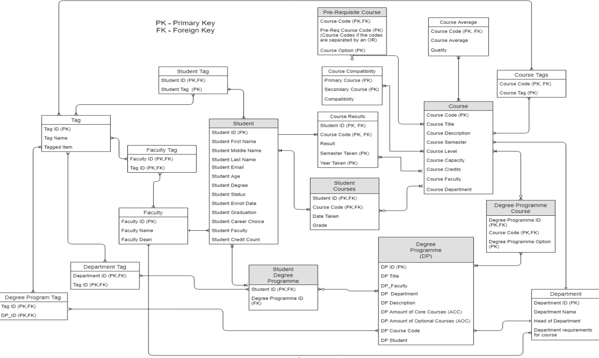

CourseHub
A prototype recommender system.
What is CourseHub?
CourseHub is a course recommendation tool that allows students to make informed choices when choosing free electives. These electives make up the remaining credit requirements associated with a degree programme and can be chosen from any available field of study at the university. The app was designed with the intended integration of the University of the West Indies' student administration system.
What is a Recommender System?
Recommender Systems
Recommender systems are information filtering systems that operate on the preferences or item ratings of a given user(s). The system utilizes user behavior and historical data to predict an item that a given user might like. This is based on the similarity between the choices or the similarities among the user and other users in the system.
Content-Based Filtering
The application utilizes content-based filtering as a recommendation method. This involves the comparison of an item's features within the system and aspects of a given user(s) in order to determine results that fit with the user's profile.
Features
Three Part Algorithm
The overall algorithm was initially too complex to work as a single function and thus split into three specific processes for various routes.
This is the main page of the application where the user's information is entered
The user in this example is pursuing a degree in computer science.
-
Algorithm 1: Popularity-Based Filtering
The system displays results based on what other users sharing a similar degree have picked in order of frequency.
-
Algorithm 2: Item-Based Collaborative Filtering
The system displays results based on tags shared with courses, the user has in progress or has already completed.

-
Algorithm 3: Model-Based Collaborative Filtering
The system displays results based on other users who match the academic performance and degree of the user and compares the similarities between those users to find courses the user may also have an interest in.
Course Tagging
Tags were generated by extracting noun-phrases from the course descriptions using a natural language processor. Each tag was used as a means for further grouping and classification. This led to the creation of a scoring system referred to as the compatibility index .
Technology Used
HTML, CSS & Vue.js
Used to provide the front-end design.
JavaScript
Used to provide website functionality.
PostgreSQL
Used as the database management system.
R
Used to clean, organize and visualize the data being processed.
Design Choices
CourseHub uses a database of contrived data for historical students and data based on the courses offered by the University. The students created had their data randomized to mitigate bias in the data.
-
Out of the 6 faculties present at the university only 3 were used due to the niche system surrounding course eligibility and credit acquisition.
-
Out of 200+ programmes offered by the university only 73 were chosen for the prototype.
-
Approximately 1000 courses were taken from the pool.
-
The sample size of simulated students is 100k, which represents approximately 6 years of historical data.
How It Works
Data Processing

Database Design
Limitations
Other faculties were excluded from the pool due to their niche course structure and predefined programme requirements.
The prototype was only able to provide results based on quantitative data, more precise and useful recommendations would need qualitative data to balance the results. This would be in the form of course and/or lecturer reviews and course tips based on past student experience.
All courses were not judged based on a complete universal scale, since the courses provided had varying factors that would affect results. This includes different class sizes that would affect the averages calculated for a course and the missing or incomplete course descriptions that would affect tag generation.